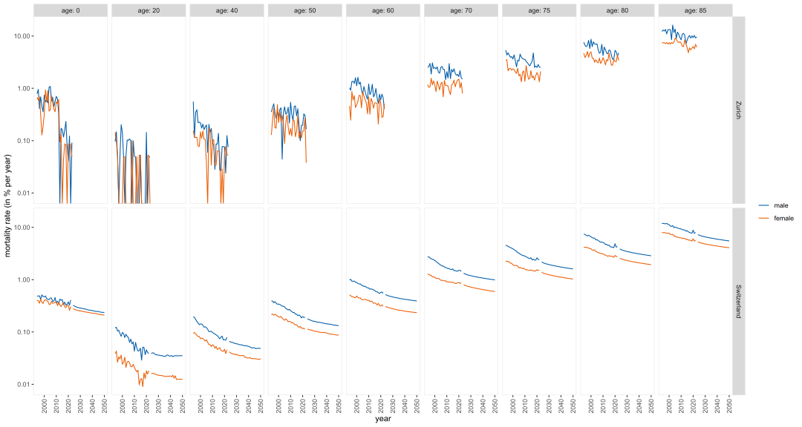
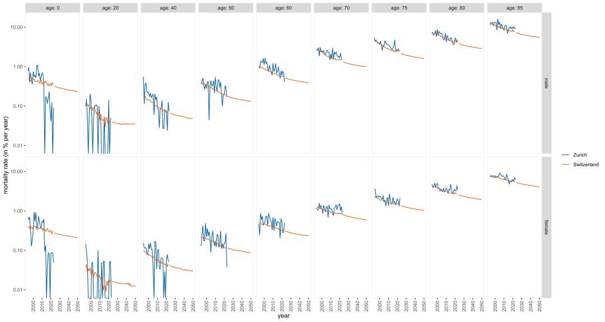
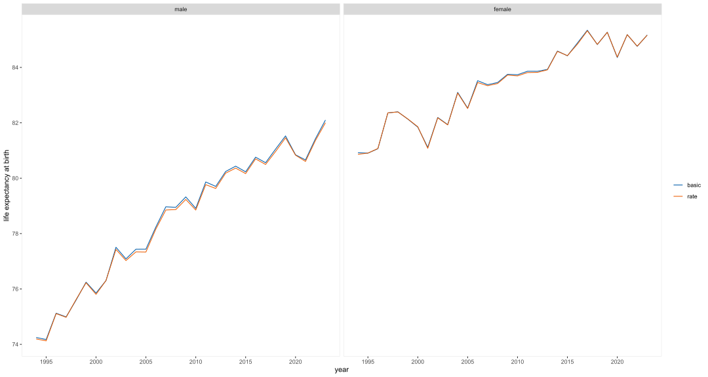
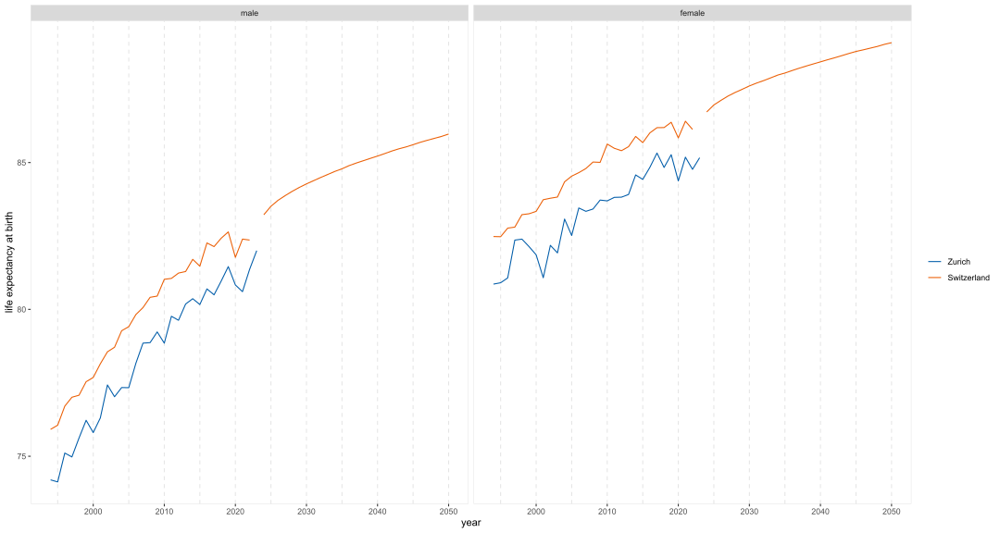
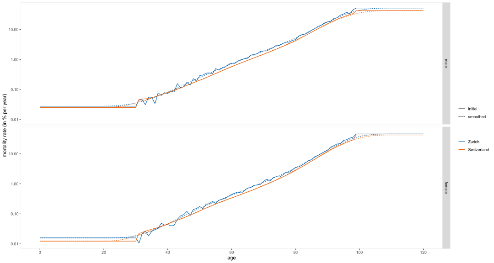
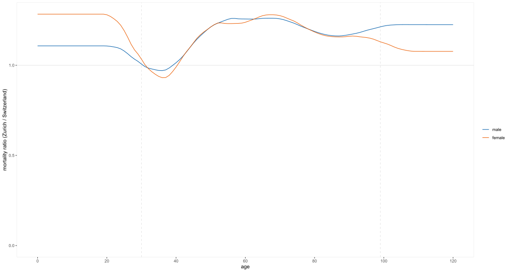
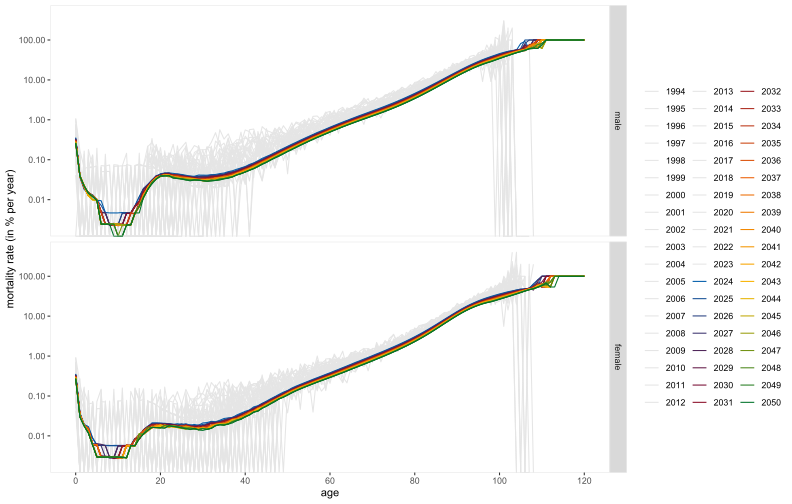
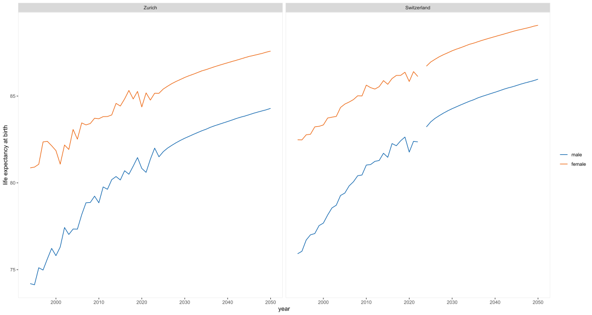

2 Death
2.1 Mortality
2.1.1 age plots
2.1.1.1 focus: difference in mortality by sex
2.1.1.2 focus: difference in mortality by region
2.1.2 year plots
2.1.2.1 focus: difference in mortality by sex

2.1.2.2 focus: difference in mortality by region

2.1.3 method comparison (based on rate vs. death/birth/population)
method differences (rate vs. deaths/births/population) details: see life expectancy function definition

2.1.4 life expectancy
2.1.4.1 focus: differences by sex
2.1.4.2 focus: differences by region

2.1.5 mortality over base years (including tail correction)
2.1.6 smoothing with LOESS

2.1.7 ratio Zurich / Switzerland

2.1.8 Zurich: future mortality rate

2.1.9 Zurich and Switzerland: future mortality rate
2.1.10 Zurich: life expectancy (including the model data)
2.1.10.1 focus: differences by sex
